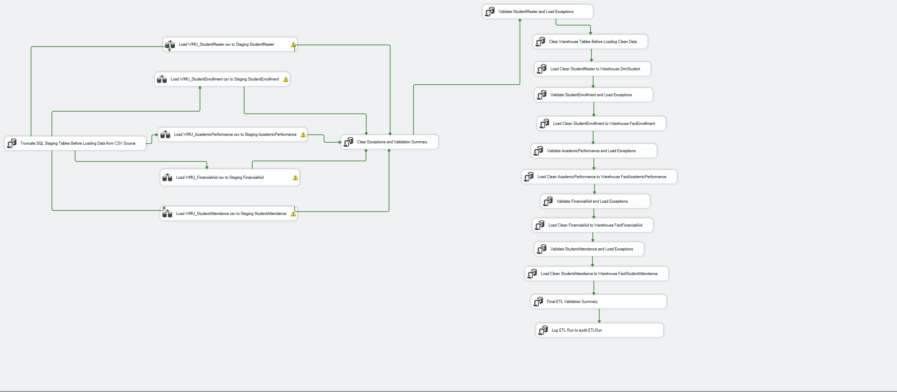
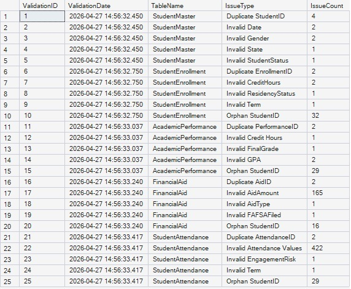
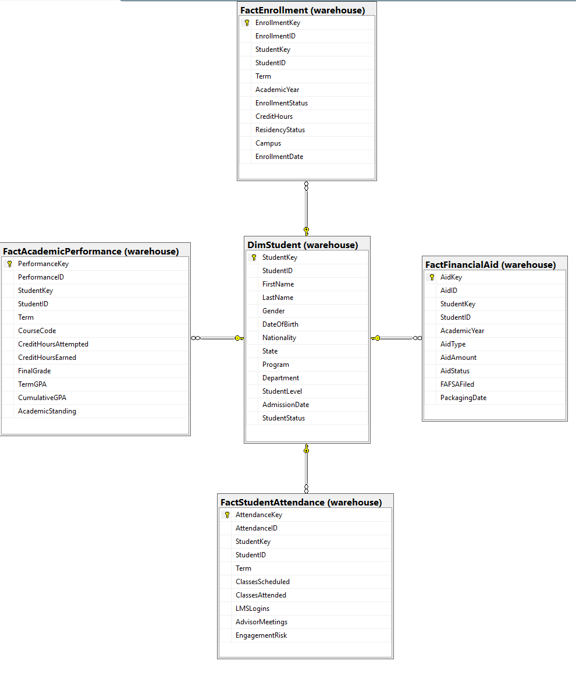
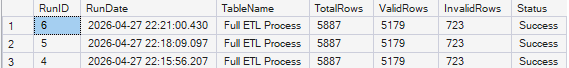

Project Overview
Western Midlands University (WMU) is a fictional higher-education institution created for this project. The solution integrates student information from multiple CSV source files into a structured SQL Server reporting environment using SQL Server Integration Services.
The project implements a full-refresh ETL process with staging tables, reference validation, exception handling, audit reporting, and a dimensional warehouse designed to support institutional analytics and Power BI reporting.
Solution Architecture
The architecture separates raw ingestion, business-rule validation, rejected records, clean warehouse loading, and audit reporting into a controlled end-to-end process.

Final ETL Results
The completed pipeline processed thousands of student-information records while separating records that failed validation from records approved for warehouse loading.
Business Problem
Higher-education institutions often manage admissions, enrollment, academic performance, financial aid, and student engagement in separate operational systems. Reporting directly from disconnected sources can result in duplicate records, invalid values, inconsistent reporting definitions, weak audit visibility, and unreliable decision-making.
This project addresses that problem by building a centralized, validated data pipeline and warehouse that provides a trusted source for institutional reporting.
ETL Process
1. Source Files
StudentMaster, Enrollment, Academic Performance, Financial Aid, and Attendance data originate from CSV source files.
2. Staging
Source records are loaded into SQL Server staging tables before validation and warehouse processing.
3. Validation
Business rules and reference tables validate identifiers, categorical values, ranges, relationships, and duplicates.
4. Exceptions
Invalid records are redirected to dedicated exception tables rather than being loaded into the warehouse.
5. Warehouse
Clean records are loaded into the student dimension and reporting fact tables.
6. Audit
Validation summaries and ETL run results provide execution tracking and reconciliation.
SSIS Implementation
The project was implemented as an SSIS control flow that coordinates staging loads, validation, exception handling, warehouse loading, validation summaries, and ETL audit logging.
SSIS Control Flow
The control flow demonstrates the actual orchestration of source loading, validation steps, exception processing, warehouse loads, and final audit logging.

Data Quality & Validation
Validation rules were built into the ETL process to prevent bad data from entering the reporting warehouse. Examples include duplicate identifier detection, invalid student status values, GPA-range checks, credit-hour validation, orphan student IDs, attendance checks, and reference-value validation.
Business Rules
Controlled SQL rules validate expected values and relationships before warehouse loading.
Exception Handling
Failed records are redirected into exception tables containing issue types, descriptions, and source-record details.
Validation Reporting
Validation results are summarized so that data-quality issues can be monitored and reconciled.
Validation Summary
The validation summary provides visibility into the types and volume of issues discovered during ETL processing.

Data Warehouse Design
The warehouse follows a dimensional design centered on DimStudent. Fact tables capture enrollment, academic performance, financial aid, and student attendance activity. A surrogate StudentKey supports consistent relationships between the student dimension and each fact table.
DimStudent
Stores student demographics, program, department, level, admission date, and student status.
FactEnrollment
Stores term, enrollment status, credit hours, residency status, and campus activity.
FactAcademicPerformance
Stores grades, attempted and earned credits, GPA measures, and academic standing.
FactFinancialAid
Stores financial aid type, amount, FAFSA status, and aid status.
FactStudentAttendance
Stores attendance, LMS activity, advisor meetings, and engagement-risk measures.
Warehouse Relationship Diagram
The relationship diagram shows the reporting-ready dimensional model linking the student dimension to the project fact tables.

Audit Reporting
The solution includes both a validation summary and an ETL run audit. Audit records track processed rows, valid rows, invalid rows, run status, and execution history so that reporting outcomes can be reconciled with data-quality results.
ETL Run Audit
The ETL run audit provides final execution metrics and confirms successful completion of the pipeline.

Business Value
The completed solution creates a trusted reporting foundation for institutional analytics by ensuring that only validated student data enters the warehouse.
Enrollment Reporting
Supports consistent analysis of enrollment activity, student status, residency, and campus.
Academic Performance
Supports GPA, grade, credit-hour, and academic-standing reporting.
Financial Aid
Supports monitoring of aid types, amounts, FAFSA completion, and aid status.
Student Engagement
Supports attendance, LMS activity, advisor interaction, and engagement-risk analysis.
Audit Visibility
Provides traceability between data-quality results and final ETL execution outcomes.
Power BI Ready
Produces clean warehouse tables designed for downstream business intelligence and institutional reporting.
Project Resources
This page presents the project as a complete technical case study. The original GitHub repository remains available for reviewers who want to inspect the SQL scripts, source files, screenshots, and implementation documentation.